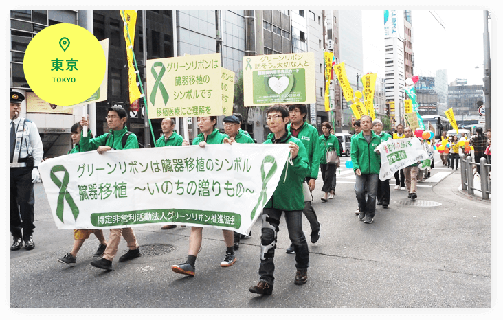
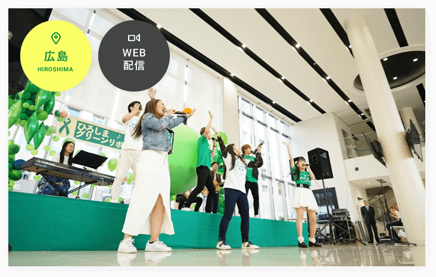

私たちNPO法人グリーンリボン推進協会は、臓器移植医療の普及啓発のため、市民の皆様が参加できるイベントやセミナーなど幅広い活動を行っています。

グリーンリボンパレード参加OK
毎年10月に移植医療について多くの人に知ってもらうため、東京にて青山学院大学吹奏楽ブラスバンド部を先頭に臓器移植関連団体、都民のみなさんとグリーンリボンパレードを行っています。どなたでも参加可能ですので、私たちと一緒に歩きませんか？

ひろしまグリーンリボンフェス参加OK
音楽ライブなど楽しい企画を通して、移植医療や命の大切さを知ってもらうイベントです。毎年10月に数日間、広島県で活躍するアーティストや高校などの教育機関、地元企業の協力を得ながら開催しています。一緒に活動してくれるボランティアメンバー随時募集中ですので、ぜひ一緒にイベントを作ってみませんか？
活動実績
- 2021年 レポート(PDF) 動画(YouTube)
みんなで学ぼうグリーンリボン参加OK
移植医療について正しい知識を得て、講師と双方向の意見交換ができる講座を開催しています。講師には医療関係者、移植者、移植待機者、ドナーファミリー、メディアなど様々な立場の方をお迎えしています。
その他の活動
-
メディアワークショップ
毎年夏に東京と大阪で開催。講師は移植医療の最前線で活躍させる医師や厚生労働省の移植医療担当者を迎え、メディア関係者に移植医療に対して正確かつ最新の情報提供を行っています。
-
厚生労働大臣への要望書提出
臓器移植に関わる患者団体と共同で、臓器移植に関する諸問題について厚生労働大臣へ要望書を提出しています。